東京大学 2017年 理科 第2問
問題
座標平面上でx座標とy座標がいずれも整数である点を格子点という。講師天井を次の規則に従って動く点Pを考える。
(a) 最初に、点Pは原点Oにある。
(b) ある時刻で点Pが格子点(m, n)にあるとき、その1秒後の点Pの位置は、隣接する格子点(m + 1, n), (m, n +1), (m - 1, n), (m, n - 1)のいずれかであり、また、これらの点に移動する確率は、それぞれ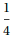である。
(1) 点Pが、最初から6秒後に直線y=x上にある確率を求めよ。
(2) 点Pが、最初から6秒後に原点Oにある確率を求めよ。
解答
(1)
n秒後の点Pのすべての経路を列挙する。
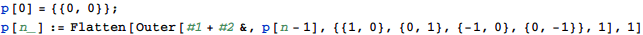
経路の総数は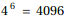と一致する。
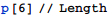
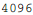
その中で6秒後の位置がy=x上にあるものをカウントする。
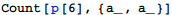
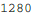
よって求める確率は
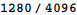
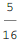
(2)
(1)と同様に6秒後に(0,0)に至る経路の個数をカウントする。
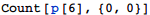
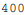
よって求める確率は
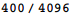
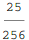
補足・感想
確率の問題でも、操作の回数が具体的に決まっている場合はコンピュータに解かせやすい。
高階関数Outerを使うことで簡潔にプログラムできた。